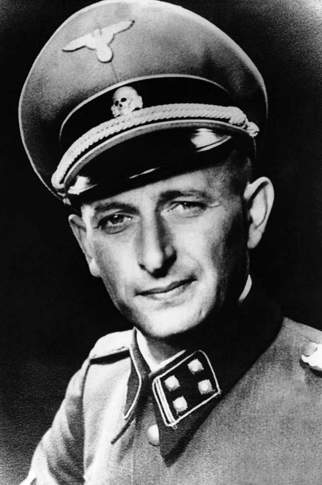

1. Où Charlotte habitait-elle après le départ d'Ottilie aux Etats-Unis ?
La bonne réponse est A l'Ermitage.
2. Comment Charlotte meurt-elle ?
La bonne réponse est Dans une chambre à gaz.
Stolperstein dédié à Charlotte SALOMON, Wielandstraße à Amsterdam.
Les Stolpersteine sont des pavés enchâssés dans la chaussée, en mémoire aux victimes de le Seconde Gueurre mondiale.
3. Qui est le père de l’enfant que porte Charlotte à la fin du livre ?
La bonne réponse est Alexander.

Alexander Nagler, époux de Charlotte. (INSERER PHOTO SCAN)
4. Quelle est la dernière oeuvre de Charlotte ?
La bonne réponse est Elle, face à la mer.
Aujourd'hui, vue de la mer depuis Villefranche-sur-mer
5. Qu’écrit Charlotte sur son dernier tableau ?
La bonne réponse est Vie ? ou Théâtre ?(Leben ? oder Theater).
Leben ? oder Theater ?, Charlotte Salomon
La dernière oeuvre de Charlotte porte le numéro 558.
6. Quel est le responsable SS à l'origine de la déportation de Charlotte et Alexander ?
La bonne réponse est Brunner.
Alois Brunner, membre du parti nazi et officier SS lors de la WW2.
7. Comment l’histoire de Paula et Albert finit-elle ?
La bonne réponse est Mort de vieillesse.
Appartement de Paula et Albert à Amsterdam.
Ils se sont réfugiés à Amsterdam en 1940. L’appartement, situé au numéro 15 de la Wielandstraße est désormais vide.
8. Comment l’histoire d'Alfred finit-elle ? D’après le livre de David Foenkinos.
La bonne réponse est Mort de tristesse.
Alfred Wolfsohn, l'amant de Charlotte
9. D’après les rumeurs, comment le grand-père de Charlotte est-il mort ?
La bonne réponse est Empoisonné par sa petite-fille.

Grands-parents maternels de Charlotte
10. Dans quel ordre les oeuvres de Charlotte ont-elles été confiées ?
La bonne réponse est Moridis > Paula et Albert > Musée juif d’Amsterdam.

Musée juif d'Amsterdam
Paula et Albert révèlent ses oeuvres au Stedelijk Museum d'Amsterdam qui organisent plusieurs expositions. En 1971, ils confient la collection au Jewish Historical Museum d'Amsterdam, où elle se trouve encore.
11. Qui était Alexander Nagler avant sa rencontre avec Charlotte ?
La bonne réponse est Un réfugié autrichien.
12. Que dit Charlotte du contenu de la valise ?
La bonne réponse est C'est toute ma vie.
13. Dans Vie ? ou Théâtre ?, que représente Alfred pour Charlotte ?
La bonne réponse est Son Amadeus.
Signifie "celui qui aime Dieu". Terme repris d’une pièce de théâtre de Pouchkine intitulé “Mozart et Salieri” en 1830.
14. Durant son enfance, comment Charlotte considérait-elle son école ?
La bonne réponse est Un lieu où la douleur s’apaise.

Ecole primaire de Charlotte Salomon
L'ancienne école Paul Dohrmann (1975-1977), fondé par Karl Otto et Hans H. Habermann à Großbeerenstraße, Berlin-Kreuzberg.
Toutes les réponses sont bonnes ! Bravo !